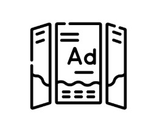

Persyaratan
Persyaratan yang harus dipenuhi oleh mahasiswa:
- Telah memenuhi persyaratan akademik;
- Telah memenuhi biaya administrasi yang ditetapkan;
- Mengontrak skripsi pada KRS semester berjalan.
Seminar Usulan Penelitian (SUP)
- Terdaftar sebagai mahasiswa semester berjalan;
- Mengontrak Mata Kuliah Seminar Usulan Penelitian yang dibuktikan dengan Formulir Rencana Studi (FRS);
- Telah mengontrak semua mata kuliah yang bersangkutan dengan pembuatan TA/Skripsi seperti Metode Penelitian;
- Telah mendapatkan SK Pembimbing dan judul TA/Skripsi yang telah disetujui;
- Telah melalui tahapan pembimbingan usulan penelitian dengan pembimbing dan telah disetujui;
- Telah melakukan pembayaran Seminar Usulan Penelitian.
Seminar Hasil Penelitian (SHP)
- Mahasiswa mendaftar aktif pada semester berjalan;
- Telah mengontrak mata kuliah Seminar Hasil Penelitian pada semester berjalan;
- Telah melalui tahapan Seminar Usulan Penelitian;
- Telah mendapat persetujuan mengikuti SHP dari pembimbing utama dan pendamping;
- Telah bebas keuangan Seminar Hasil Penelitian.
Sidang Akhir Skripsi
- Mahasiswa telah melakukan registrasinya atau dicatat sebagai mahasiswa pada program studi yang diikuti dalam semester berjalan;
- Indeks Prestasi Kumulatif minimal 2,76 tanpa nilai E;
- Jumlah nilai D maksimal 2 Matakuliah dan bukan matakuliah inti;
- Telah lulus mata kuliah yang dijadikan syarat dalam penyusunan skripsi;
- Telah melunasi biaya bimbingan tugas akhir;
- Telah lulus UEPT dan memenuhi skor TAK;
- Memiliki sertifikasi Kompetensi Internasional;
- Bukti submit article publikasi pada jurnal nasional ber-ISSN terindeks sinta.
Fokus & Ruang Lingkup Skripsi
DESAIN GRAFIS
Buku komik, sistem tanda, tipografi, identitas visual, dan ilustrasi interaktif.

VISUAL PERIKLANAN
Kampanye sosial, komersial, TV komersial, iklan cetak, serta media digital.

MULTIMEDIA VISUAL
Fotografi, videografi, game, animasi interaktif, VR, AR, dan UI/UX.

NARASI VISUAL DIGITAL
Gambar bergerak, animasi, konten digital kreatif, dan film digital.